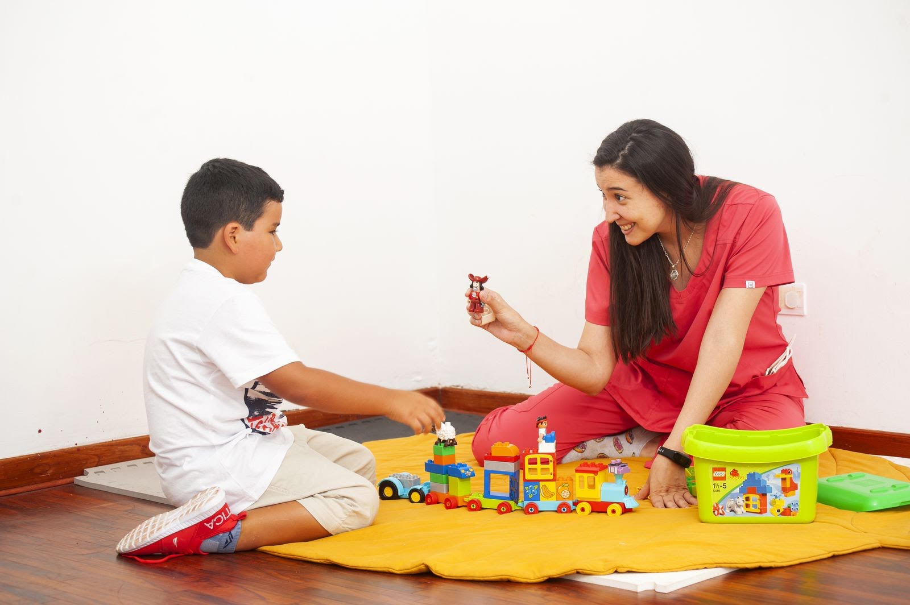

Evaluaciones Emocionales
En Terapias RP te ofrecemos el servicio de evaluación emocional, la cual es una evaluación de origen psicológico que se realiza con eficiencia, respeto, y calidez. Esto mismo en conjunto con las técnicas de evaluación apropiadas nos permiten conocer el estado emocional del niño, como expresa y maneja sus emociones.
Evaluaciones Integrales
La evaluación Integral consiste en evaluar el desarrollo intelectual, emocional y madurativo del niño a través de Pruebas Psicológicas Específicas, con el fin de conocer el nivel intelectual, la dinámica familiar y sus necesidades emocionales.